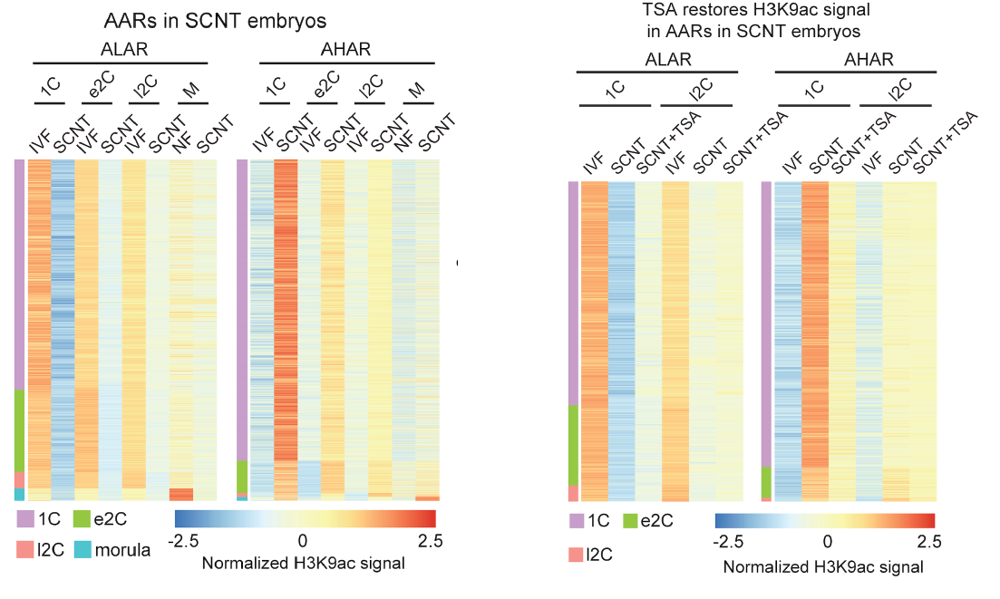
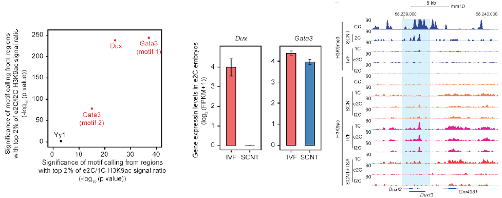
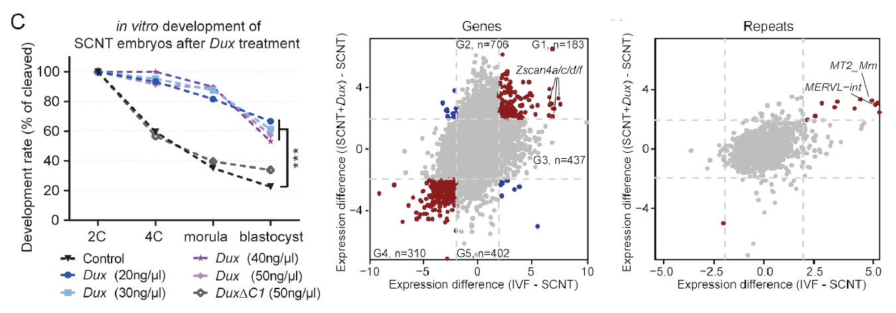
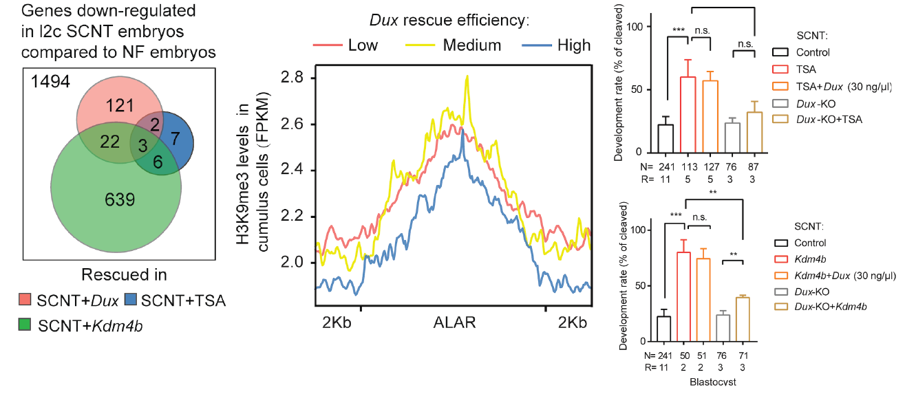

新型体细胞核移植挽救方法的建立及表观重编程机制对比研究
Dux-Mediated Corrections of Aberrant H3K9acduring 2-Cell Genome Activation Optimize Efficiencyof Somatic Cell Nuclear Transfer

2020年10月12日，同济大学生命科学与技术学院高绍荣团队与江赐忠团队在《Cell Stem Cell》 杂志在线发表了题为“Parallel analysis of H3K9ac reveals Dux-dependent 2-cell genome activation deficiency in somatic cell nuclear transfer embryos”的研究成果。他们首先通过对于早期正常受精小鼠，核移植小鼠，以及TSA挽救处理后的核移植小鼠的H3K9ac组蛋白修饰的平行分析，鉴定出一系列以H3K9ac标记的重编程异常区域(aberrantly acetylated regions, AARs)，并首次揭示出TSA挽救的原有表观环境依赖性（歧视性挽救）特性。接着，作者通过TF footprint分析，利用已建立的H3K9ac图谱推断出潜在的转录因子挽救靶点Dux，成功进行了核移植胚胎挽救并进行了后续深入的机制论证。。
体细胞核移植（SCNT）技术是将已经分化的体细胞移入去核卵母细胞内，使体细胞的染色质发生重编程，继而启动胚胎发育到完整个体的技术。虽然SCNT是目前为止唯一一种可以使体细胞获得完整全能性的手段，但是由于在重编程过程中出现了各种表观遗传水平修饰的异常，使得SCNT胚胎的发育能力处于较低水平，也极大程度地限制了该项技术的应用前景。既往针对SCNT胚胎的挽救措施主要以表观修饰酶干预为主，意图使早期核移植胚胎的染色质得以更加开放，具体包括过表达Kdm4 mRNA，敲降Dnmt, 使用HDACi(TSA,SCR)等[1,2,3]。这些措施可以相当程度促进SCNT胚胎的发育，从而提高最终的克隆率。
通过对于组蛋白H3K9ac图谱的绘制，作者首先确定一系列SCNT胚胎中的异常乙酰化区(AARs)，并观察到预期中的由母源基因介导的表观重编程现象。接着，当TSA处理SCNT胚胎后，由于HDAC作用被抑制，整体乙酰化水平得以提高，从测序上能够观察到全局AARs差异的收敛。然而，当作者在部分区域进行修复情况的检查，发现这种乙酰化水平的上升是不平衡的。作者因此寻找引起这种挽救效果差异的原因，并发现供体基因组染色质的环境对于TSA效果起到直接影响—在供体基因组不开放的染色质区域，TSA很难起到激活作用。这一结论暗示现有的基于表观修饰酶的SCNT挽救方法均可能存在的类似“歧视性挽救”的问题。（图1）。
作者进一步尝试寻找不存在上述缺陷的挽救方法。通过前期图谱的对比研究，作者利用TF footprint推断出可能的在SCNT胚胎中作用发生缺失的TF，包括Gata3和Dux。通过转录组水平观察，由于Gata3是一个母源基因，SCNT胚胎与作为参照的IVF胚胎有着相似的表达水平。最终Dux成为最为可疑的靶点。进一步的早期表观修饰图谱亦观察到Dux基因座在SCNT胚胎的K9me3封印现象。
作者后续通过对于SCNT胚胎的Dux mRNA注射，成功实现了SCNT胚胎的挽救。然而，Dux的浓度直接决定了挽救的效果，过高或过低剂量的Dux注入均不能改善SCNT胚胎的发育，这一点印证了Dux在正常胚胎中的一系列研究结果。进一步观察发现，Dux的过表达能够显著修复靶基因的低乙酰化状态并促进相关基因/重复序列的表达。
作者进一步通过对Dux基因片段的操纵，建立三种不同长度C端敲除的缺陷型Dux。通过对比三种缺陷型Dux的回补挽救效果，作者意外发现敲除长度最短与次短的Dux∆C2，∆C3都能在相当程度上挽救SCNT胚胎的发育，并提高Zscan4的表达。而敲除长度最长的Dux∆C1则没有挽救功能，并且彻底丧失提升乙酰化的效果。因此，可以确定小鼠Dux的C端功能区域应该在Dux∆C1之后。
最后，作者通过组学数据梳理了Dux，Kdm4，TSA三种挽救方法的关联性。Dux和后两者挽救的基因表达具有一定程度的重叠，但相对TSA而言没有“歧视性挽救”的缺陷。以Dux-KO的体细胞作为donor cell来进行SCNT实验，令人惊讶的是，Kdm4和TSA的挽救效果在这一情境下受到极大的限制。这直接说明这两种挽救方法相当程度依赖Dux cluster基因座的激活。由于TSA并非直接激活Dux表达，作者猜想，这种限制可能来自邻近非H3K9me3封印的Gm4981的敲除。
综上，本文系统比较研究了SCNT各类挽救方法，首次发现了既往基于表观修饰酶(enzyme-based)挽救方法的特异性缺陷，并首次提出了基于转录因子的(TF-based)精确挽救方法，填补了该领域的一大空白。 同济大学生命科学与技术学院直博生杨光、张林凤博士和刘文强副研究员为本文共同第一作者，高绍荣教授、江赐忠教授和陈嘉瑜副教授为本文共同通讯作者。该研究得到了科技部、基金委和上海市科委项目的支持。